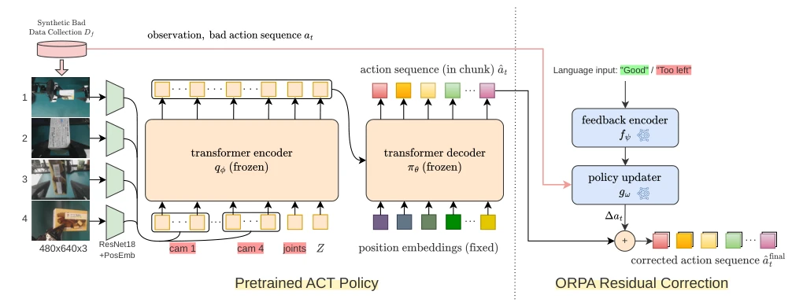
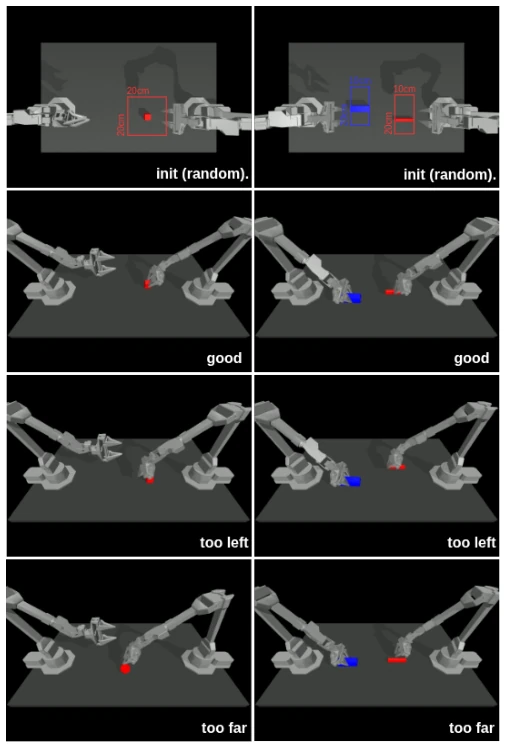
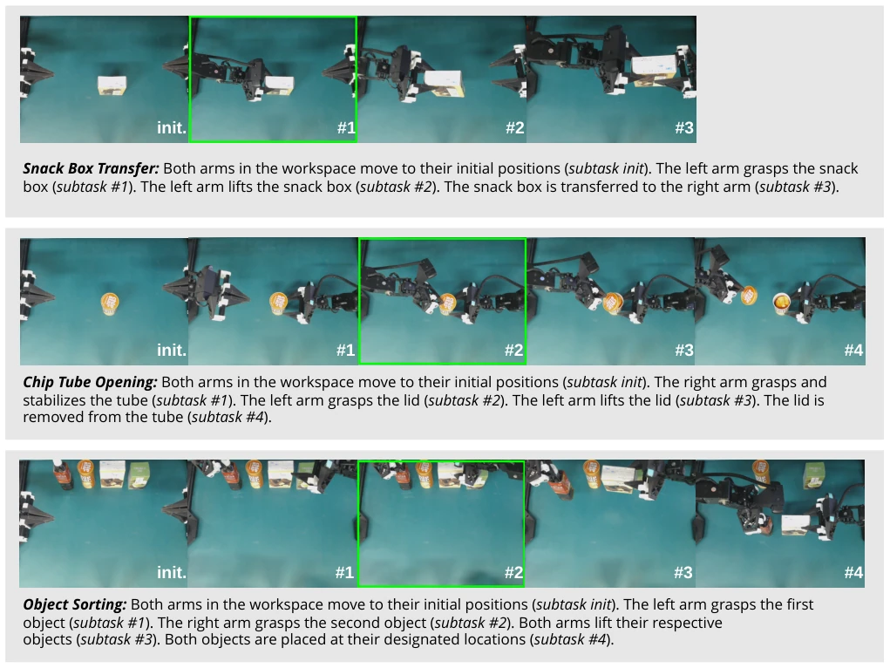

This paper brings timely rain to robotics researchers whose ACT strategies "crash" under minor perturbations, but do not cheer yet; essentially, it is putting a "patch jacket" on the old model. ORPA's core idea is quite clever: it does not touch the frozen ACT backbone, only adds a lightweight module to fine-tune joint-space actions based on human feedback. This approach is indeed much faster than retraining (DAgger-like methods) and smarter than rigid inverse kinematics rules, capable of dynamically adjusting correction magnitudes based on task stages. However, the criticism points are also obvious: it highly relies on the assumption of "human feedback"; in reality, how to obtain these "too left", "too high" instructions with low cost and low latency? If the feedback itself has noise or latency, will this residual strategy go crazy along with it? Additionally, although the synthetic data it generates saves manpower, whether it can cover complex physical contacts in the real world (such as slipping, deformation) is still a question mark. Overall, this is a very practical "first aid kit" in engineering, but there is still a distance from true "intelligent self-healing".
Existing imitation learning strategies (such as ACT) perform excellently under ideal conditions, but in real-world deployment, they are extremely prone to failure due to execution errors and environmental distribution shifts. Traditional paths to solve this problem mainly have two schools: one is data aggregation and retraining (such as DAgger [3], HG-DAgger [7]), which are effective but computationally expensive and time-consuming, unable to respond in real-time; the second is rule-based geometric correction (such as inverse kinematics IK), which is fast but too rigid, assuming "the same feedback corresponds to the same correction", ignoring context dependencies such as task stages and object configurations. For example, in the grasping stage and placement stage, the same "too left" feedback may require completely different correction magnitudes. In addition, language model-based methods such as OLAF [8], although introducing feedback, have high inference latency and lack guarantees of temporal consistency for action trajectories. Therefore, there is an urgent need for an online adaptation framework that can respond in real-time, perceive context, and not destroy the robustness of pre-trained strategies.
The ORPA framework adopts a "frozen backbone + residual correction" architecture. The overall process is: the pre-trained ACT strategy generates a baseline action chunk, meanwhile human feedback signals are encoded, both combined and input to the Policy Updater, outputting residual correction amount, final action = ACT output + residual. Specific innovations are as follows: 1. Feedback Encoder: maps discrete text feedback (such as "too left") to learnable embedding vectors, capturing semantic information. 2. Policy Updater: this is a lightweight Transformer module, receiving encoded feedback, current observations (RGB images + joint states), and ACT's predicted actions, directly predicting joint-space residual correction amounts. This design allows correction amounts to change dynamically based on task context (such as object position, grasping stage), rather than fixed rules. 3. Synthetic Data Generation: to solve the problem of collecting real human feedback data being expensive, authors utilize successful trajectories, by artificially perturbing object poses (such as translation, rotation) to create "failure" scenarios, and automatically label corresponding feedback tags (such as object left then label "too left"), calculating the difference between reference actions and perturbed actions as residual targets. During training, only the feedback encoder and updater are optimized, ACT parameters are frozen, ensuring real-time performance.

Fig. 2: Training pipeline of the proposed Online Residual Policy Adaptation (ORPA) framework. Left: A pretrained ACT policy generates nominal joint-space actions from visual observations and robot states. Structured perturbations are introduced to create synthetic errors together with corresponding corrective feedback labels. Right: The Feedback Encoder (FE) and Policy Updater (PU) are trained to predict residual action corrections conditioned on RGB images, robot states, bad actions, and human feedback. The predicted residual is supervised using the difference between perturbed and reference actions.

Fig. 3: Generation of synthetic manipulation errors for ORPA training. Objects are randomly initialized within predefined workspace boundaries (top row), and successful demonstra- tions are first collected as reference trajectories (good). Carte- sian perturbations are then introduced to the target object pose, producing failure scenarios (too left and too far).
Experiments are conducted on the ALOHA dual-arm platform, covering simulation and real world. Simulation tasks include cube transfer and two-hand insertion, real tasks include snack box transfer, cap opening, and object classification. Baselines compared original ACT, rule-based IK correction, and OLAF. Evaluation metric is success rate. Results show that in simulation, facing perturbations, ORPA increased cube transfer success rate from ACT's 60% to 92.3% (discrete feedback), significantly better than IK's 81% and OLAF's 78.5%. In the real world, ORPA also improved completion scores by 0.03-0.04 in contact-sensitive tasks such as cap opening. Ablation experiments show that introducing perturbed observation data improves robustness more than perturbing actions only. Key finding is that ORPA can adaptively correct based on task stages, while IK methods often fail due to over-correction.

Fig. 4: Qualitative results of the proposed ORPA framework on three real-world manipulation tasks: snack box transfer, chip tube opening, and object sorting. Each sequence illustrates the initialization stage followed by key manipulation subtasks. The ones with green boxes indicate the subtasks during which online adaptation usually occurs.